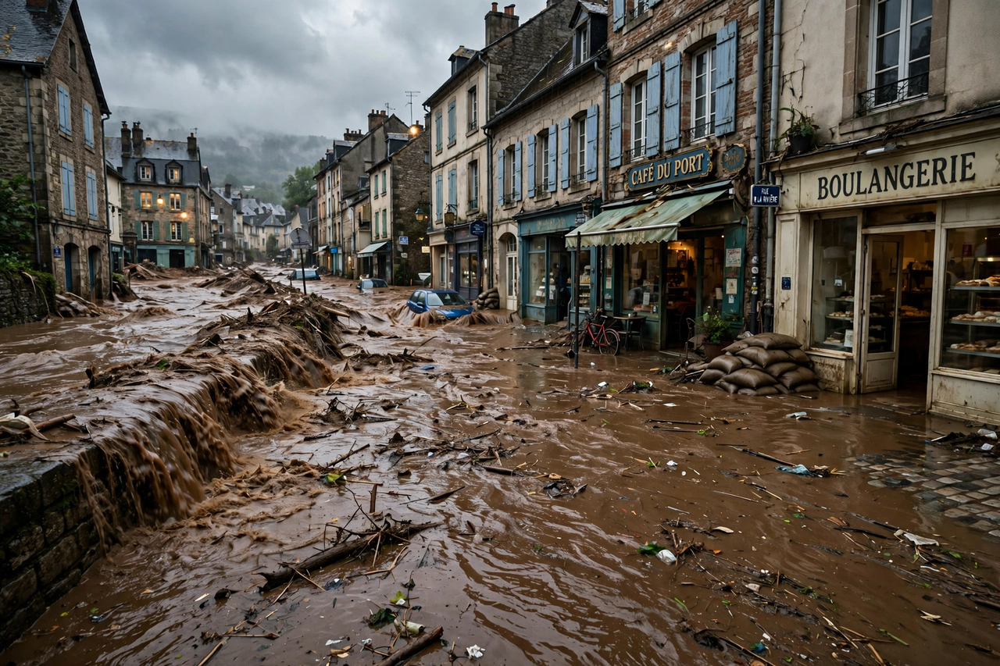

Flood

A flood is an overflow of water onto land that is usually dry. Floods are the most common and widespread of all natural hazards and can arise from heavy rain, rapid snowmelt, storm surge, dam or levee failure, or tsunami.
They range from slow rises that inundate a region for months to flash floods that arrive in minutes with lethal force.
Types
Riverine (fluvial) floods occur when rivers overtop their banks onto the {L('Floodplain')}; flash floods follow intense rain, especially in steep or urbanised catchments; coastal floods come from storm surges and high tides, increasingly compounded by {L('Sea_level_rise')}; pluvial floods pond on flat urban surfaces when drains are overwhelmed; and groundwater floods rise slowly from saturated aquifers.
Great historical floods include the 1931 Yangtze–Huai floods in China, among the deadliest disasters ever recorded; the North Sea flood of 1953, which reshaped Dutch water policy; and the Pakistan floods of 2022, which inundated around a third of the country at their peak.
Risk and management
Flood risk is managed by forecasting and warnings, dams and levees, restored wetlands and floodplains that store water, drainage and building standards, and insurance. Climate change intensifies heavy rainfall and raises seas, increasing risk even where total rainfall is falling. See Hydrology and Natural disaster.
See also: Floodplain · Hydrology · Natural disaster · Sea level rise · Wetland · Drought